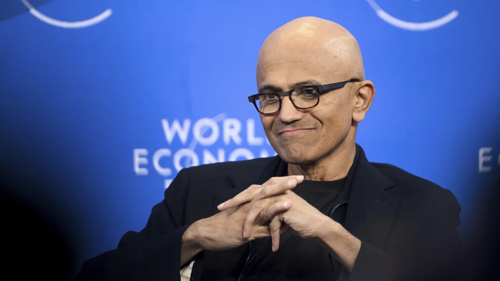

Microsoft CEO Satya Nadella says he’s ‘optimistic’ about the future of AI
(CNN) - Microsoft CEO Satya Nadella said during the World Economic Forum in Switzerland on Tuesday that he is “hopeful” and “optimistic” about the future of artificial intelligence, but that countries should be on the same page when it comes to embracing a set of industry standards.
In a conversation with Klaus Schwab, chairperson of the World Economic Forum, Nadella discussed where he believes the AI industry is headed and how global safety guardrails needed.
He also highlighted some of Microsoft’s most recent developments in the space.
“As a digital technology industry, the biggest lesson learned perhaps for us is that we have to take the unintended consequences of any new technology along with all the benefits,” Nadella said. “[We have to] think about them simultaneously as opposed to waiting for the unintended consequences to show up and then address them.”
Although AI has the potential to supercharge productivity, creating a new era of possibly better jobs, better education and better treatments for diseases, it’s also raised concerns about increasing unemployment, misleading people and possibly bringing about the end of humanity as we know it.
Many in Silicon Valley seem to hold both sets of views at once. In an interview with CNN’s Fareed Zakaria on Tuesday, Bill Gates acknowledged concerns that 40% of jobs around the world could be affected by the rise of AI, but also said he believes history shows with every new technology comes fear and then new opportunity.
These comments come as AI companies and lawmakers continue to call for sweeping regulations of the technology.
Nadella said he believes a global regulatory approach would be “very desirable.”
“These are global challenges and require global norms and standards,” he said. “Otherwise, it’s going to be very tough to contain, tough to enforce and tough to, quite frankly, move the needle even on some of the core research that is needed.”
He noted, however, that there “seems to be broad consensus though that is emerging.”
Nadella said he is also encouraged by a fundamental change seen across the industry over the last 10 years.
“I feel like our license to operate as an industry depends on that because I don’t think the world will put up any more with any of us coming up with something that has not thought through safety, trust, equity,” he said. “These are big issues for everyone in the world.”
Despite AI’s lightning fast growth, Nadella said he believes the key players are thinking about the future in a smart way.
“I’m very optimistic because of the dialogue that’s happening,” he said. “People in our own industry are stepping it up to say, okay, here are the ways we are going to raise the standards on safety.”
Microsoft has established itself as a leading force in the growing AI arms race.
Last year, Microsoft made a multibillion dollar investment in OpenAI, the company behind the viral ChatGPT chatbot and has since rolled out the technology to its suite of products.
Big Tech companies including Google, Amazon and Meta are also racing to deploy similar technologies.
Earlier in the day, Microsoft announced a $20 monthly subscription plan for its AI-powered Copilot tool — which uses the technology that underpins ChatGPT — for its Office 365 products, including PowerPoint, Excel and Word. It was previously only available to companies, starting at $30 per person.
Nadella said he is enthused by AI’s potential to impact a range from industries, from science and education to removing some of the “drudgery” of software engineering.
“I think ‘24 will probably be the year where all of this will scale,” he added.